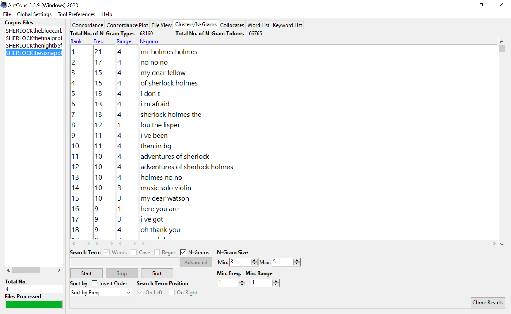
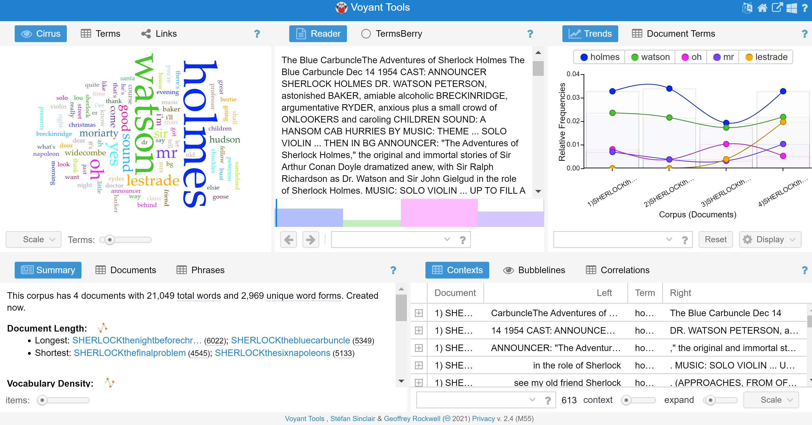
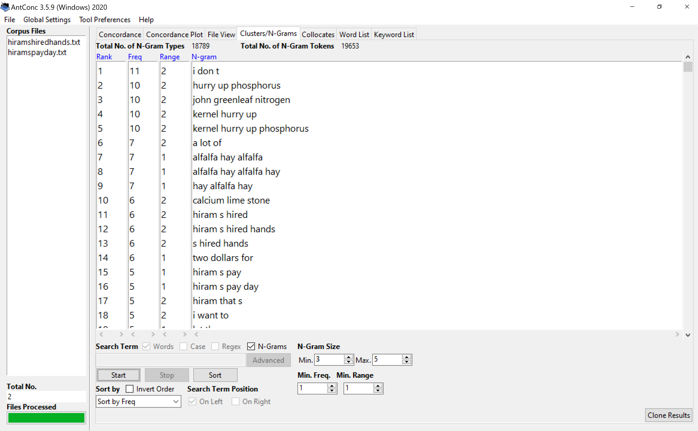
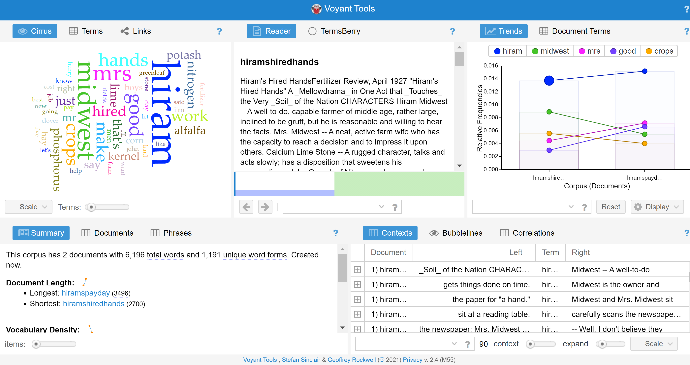

Through a little bit of sifting some common themes could be developed quite easily. Even more so it was super easy to find the characters that are most relevant in this series of Sherlock Holmes radio plays. The two names that appeared most often were Holmes and Watson. A single word that stood out to me being used over 100+ times was "lestrade". With a definition of bringing anything you start to a completion I thought that maybe it was a trait that people were applauding of Holmes or Watson. But upon further investigation in Antconc and reading surrounding text with the word. I found that it was in fact a person instead. This struck me by surprise as I have never delved into any of the Sherlock Holmes stories before this. One other thing I found interesting was the analysis of music I was able to do through the antconc program. Even though it does not say the exact music that is playing it gives insight into the types of instruments that were being used in the background. With violins, I could already get a James Bond 007 type of feel to the music in my head. This was my base understanding of the antconc analysis and when diving deeper into some of the N-Grams there were instances of Christmas time popping up. Given that it can be concluded the season in which this story is taking place. Also when clicking on separate N- grams with Watson involved it is almost as if he is always stuck with Sherlock Holmes in these stories. A lot of the times when he is speaking or being spoken to it can be followed up with a line from Sherlock himself or it is in response to him. Although the antconc view of this was very insightful it was a little too much information for these radio plays that involved a lot of music and sounds.

On the voyant side of things I was not expecting anything surprising to pop off the page. I knew that names were going to be the leading words here. As well anything along the lines of music and sound. If there were any words that did surprise me they were as follows: “children”, “street”, and “baker”. I decided to switch my analysis over to these words to see what their purpose was and why they appeared frequently throughout the text. To start, the word children seems to be in correlation with the time of year this is taking place, Christmas. Throughout the telling of this story they are involved with meeting with these kids to surprise them and even show off some presents that they are giving to them. There are also a number of times that the children are caught in a singing carole where they are mentioned. The word street is used in these texts to put emphasis on the movement of Holmes and his partner Watson. Throughout this radio play they are placed on different street corners in what seems to be every other line. They are on a mission of sorts where they are forced to travel within the parameters of a city. This led me to believe that Baker may be a street name that they revisit multiple times but with this I found myself in a confusing place. There was in fact a Baker street but there was apparently someone with the last name Baker as well. And when clicking through some of the sentences with Baker in it I could derive one of the goals in the story. They were searching for a man with the last name Baker. Which would cause trouble because there are many with that last name in their “great city”.

The two hiram documents under investigation on antconc with a specified three to five N-gram search came up with a lot of results that showed a set theme for the characters of the story. With phrases such as: “hurry up phosphorus” and “kernel hurry up” it seems that the characters in this set of hiram radio plays are always lagging behind. What really surprised me was the number of times a plant of sorts was mentioned in these phrases. The fruit lime was mentioned, as well as tobacco. There were a lot of instances where cultivation was even said. So this leads me to believe some sort of farm is in the works or they are located near one. The use of the word “midwest” is frequent as well which supports the farm location idea. Midwest popped up when switching the minimum N-Grams to one to three rather than the three to five. After looking for frequent things with antconc I dove into the lesser repeating things and found that “bushels” and “harvesting” were sprinkled throughout giving this farming idea closure. There was no doubt from the analysis through antconc that I found myself a set scene and storyline of sorts.

When analyzing through voyant I wasn’t sure if the change from clusters of words to standalone words would change my findings. So, I was interested to see what would change, if anything at all. The words that translated over from antconc to voyant were really no surprise. “Hiram”, “Midwest”, and “Lime” even managed to sneak into the top 25 words on the list. What surprised me was “nitrogen” appearing. Because in antconc “hurry up phosphorus” was an N-gram that appeared frequently. Was this a form of names in the story? Using elements from the periodic table seems a little out of place for a story of what seems to be about farming. I did not know what to make of these element names until further investigation. When singling out these terms, sure enough, there were sentence structures that would point to these elemental names being peoples names in the story. Moving on from that, words like “crops”, “hired”, and “hands” were used quite commonly in these texts. And when looking each one up they are seen being used together to form “hired hands”. This is a phrase that tends to be used when talking about heavy labor. That and “crops' ' being found on voyant clarified my understanding of these radio plays.